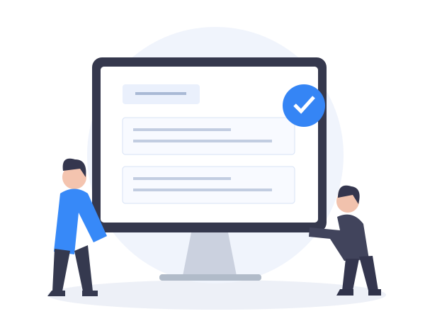
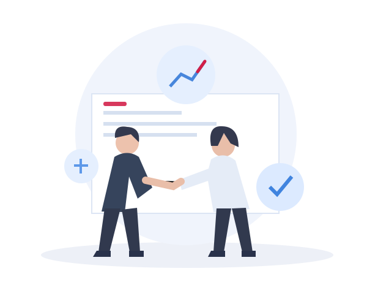

UCC Filing and Lien Monitoring
Coordinate state UCC filings and county fixture filings. Discuss continuation tracking and lien monitoring.
Monitoring scope and availability confirmed before enrollment.
AADS · PUBLIC RECORDS INTELLIGENCE CENTER
Get the research, filings and supporting documents your matter needs, with experienced people, human review and one point of contact. Put nationwide public-record research and practical knowledge to work for your next request.
Supporting legal, lending, title and accounting teams since 2002.

Choose the result your team needs. Each service page explains what to request, how to prepare and what the deliverable covers.
Get the UCC, lien and litigation findings and supporting records your legal or financing review needs.
Explore Research →Coordinate state UCC filings and county fixture filings. Discuss continuation tracking and lien monitoring.
Monitoring scope and availability confirmed before enrollment.
Get property findings, municipal responses and supporting documents together for your closing review.
Explore the service →SERVICEGet certificates of good standing, corporate records and filing acknowledgments matched to the correct entity and jurisdiction.
Explore the service →SERVICEGet the document retrieval and certification work your international transaction requires, with origin and recipient requirements confirmed.
Explore the service →SERVICEGet documented OFAC sanctions-list search results for the names in your transaction, with the search date, sources and potential matches identified.
Explore the service →SERVICECoordinate your registered agent appointment or change with the correct entity, state and authorized client contact.
Explore the service →SERVICEGet civil and criminal case findings, bankruptcy records and supporting court documents for your matter.
Explore →Get the search result, certified document or filing evidence your matter needs—and a clearer starting point for the work behind it.

Coordinate UCC and lien searches, litigation and bankruptcy research, with supporting copies matched to your request.
Get certificates of good standing, corporate records and certified copies, with filing and registered agent support.
Bring title, ownership and encumbrance, municipal lien, zoning verification and recording requirements together.
Explore Services About AADS →Keep related research and document requests together across states and sources.
Confirm what the request includes, the supporting records needed and the date your team is working toward.
Work with people who understand that different jurisdictions and document requirements need different research paths.
Start Your RequestOne less thing holding up your deal. Results you can count on.
From single-jurisdiction searches to multi-jurisdictional and nationwide requests, AADS delivers due diligence intelligence through carefully reviewed search results—giving your team reliable information to assess risk, meet deadlines and keep matters moving.
Research and supporting records reviewed against the agreed request, with scope and source limits made clear.
Related records, filings and documents coordinated across states, counties and other relevant sources.
Bring one defined request. Get a clear scope, quoted fees and anticipated timing before work begins.
Your deal spans states. Get the records your multistate matter needs through one point of contact.
Closing day is too late for surprises—get the answers before the scramble. Bring your property research, documents and recording needs together.
Have the search results and supporting copies ready for your financing review.
Don’t let a missing certificate of good standing hold up the deal. Get the official records and documents your business clients need.
Company experience supporting public-record, filing and document work.
Names, jurisdictions, sources, copies and delivery requirements agreed for the matter.
Practical guides identify the official references and source-check dates behind them.
Start with one defined request. Get a clear scope, quoted fees and anticipated timing before work begins.
Get the research, filings and supporting documents your matter needs, with experienced people, human review and one point of contact.
Source knowledge matched to the jurisdictions and records your matter requires.
Supporting records and research reviewed against the scope of your request.

A place to coordinate related searches, filings and documents across sources.
Experience behind the request
An approved matter summary will explain the request, the jurisdictions coordinated and the documents delivered.
Prepared preview · Approved example and PDF to be supplied
Approved sample required
Start with your need. Confirm the details. Keep the work moving.
Tell us what you need, the relevant jurisdictions and your deadline.
Agree on the searches, copies, certifications and filing requirements.
We coordinate the requested records and research for your matter.
Results and supporting records are reviewed against the agreed request.
Get the agreed work, with outstanding items and source limitations identified.
Bring follow-up questions or related document needs to your point of contact.
Timing depends on the service, jurisdiction and source availability. Tell us about a deadline at the start.
Bring your next search, filing or document request to an experienced team.
Get in TouchChoose a package built around your matter. Keep the related searches, documents and follow-through together.
Bring the search results and entity documentation your transaction needs together through one point of contact.
Bring the ownership research, recording work and local-source responses your closing file needs together.
Your quote confirms the names or properties, jurisdictions, sources, records, fees and anticipated timing. Package components are matched to the agreed request.
Practical, source-linked answers to the questions behind a well-prepared request.
Start with the name, sources, jurisdictions and deliverables—not simply “a nationwide search.” A written scope gives the researcher and reviewing team the same reference point.
Read the guide →REQUEST-PREPARATION GUIDETreat recorded land records and local departmental responses as distinct parts of the research plan. Define the components your closing file needs before work begins.
Read the guide →REQUEST-PREPARATION GUIDEMatch the document to the receiving party’s requirement. A certificate of good standing, an online status result and a certified copy serve different needs.
Read the guide →REQUEST-PREPARATION GUIDEIdentify the document’s origin, destination country and receiving party’s instructions before choosing a processing route. The word “apostille” alone does not define the whole request.
Read the guide →→ AADS TV Preview→ Client Tools PreviewPublic Records Glossary → · State-by-State Guides →
Explore our article archive for perspectives on public records, property research and due diligence.
AADS is the leader in Miami-Dade County Municipal Lien Searches because we find things other researchers miss. Here's how.
Read the article →FROM THE ARCHIVE · Sep 10, 2017Never before has it been more important to Know Your Customer. Federal and state regulations and their overwhelming compliance requirements have become the reality – the defining c
Read the article →Yes. AADS coordinates public-record research and document work across states, counties and federal courts through one point of contact. The names, jurisdictions, sources and records included are confirmed for your matter.
Yes. Provide the exact legal entity name, issuing state, file number if known, recipient requirements and date needed. AADS coordinates the certificate of good standing or the equivalent certificate offered by that issuing office.
Timing depends on the service, jurisdiction, source availability and the records required. Share your deadline at the start. Anticipated timing and any available rush option are confirmed for the actual request.
The quote depends on the names or properties, jurisdictions, record categories, copies, certifications and any rush requirements. Confirm the service charges and applicable government or document fees in the quote before proceeding.
AADS TV
Practical conversations about due diligence, filings and the documents behind a transaction.
Prepared preview · Episode media and approved content to be connected
Prepared topic position
Video, captions, transcript and reviewed sources connect here.
Preview the Episode Page →Prepared topic position
Video, captions, transcript and reviewed sources connect here.
Preview the Episode Page →Prepared topic position
Video, captions, transcript and reviewed sources connect here.
Preview the Episode Page →